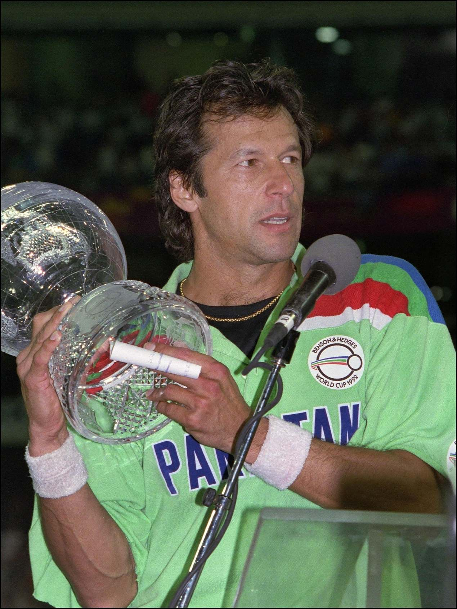

◆
Cricket Career
Debuted in 1971 and became one of the greatest all-rounders in cricket history.
A TRIBUTE TO
A Life of Leadership, Resilience and Service
Not just a cricketer, not just a politician,
but a voice for a better tomorrow.
ABOUT
Imran Khan was born on 5 October 1952 in Lahore, Pakistan. He is a renowned cricketer, philanthropist and politician, who has inspired millions with his journey of courage, honesty and belief in a better and more just world.
He made his mark in international cricket as a talented all-rounder and later became the captain of the Pakistan cricket team, leading the country to its first-ever Cricket World Cup victory in 1992. After retiring from cricket, he dedicated his life to serving the people of Pakistan through education, health and social welfare projects.
Imran Khan founded the Shaukat Khanum Memorial Cancer Hospital and Research Centre, which has provided free cancer treatment to thousands of patients. He also established Namal University, focusing on quality education and empowering the youth of Pakistan.
Later, he entered politics and became the Prime Minister of Pakistan in 2018, with a vision to build a more prosperous, just and self-reliant country. His life continues to be a source of hope, especially for young people who dream of making a difference.
The real strength of a nation
lies in the youth.

KEY ACHIEVEMENTS
From the cricket field to the political arena, Imran Khan's journey is a story of determination, service and vision.
Debuted in 1971 and became one of the greatest all-rounders in cricket history.
Led Pakistan to its first-ever ICC Cricket World Cup victory as captain.
Founded in 1994, providing free cancer treatment to thousands of patients.
Established in 2008 to provide quality education and empower the youth.
Served from 2018 to 2022, with a focus on justice, economic growth and self-reliance.
Always stood for the rights of the poor, the oppressed and those in need.